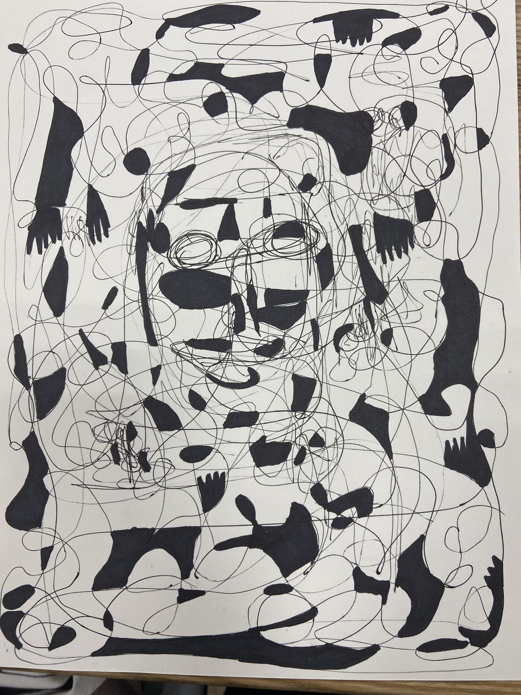
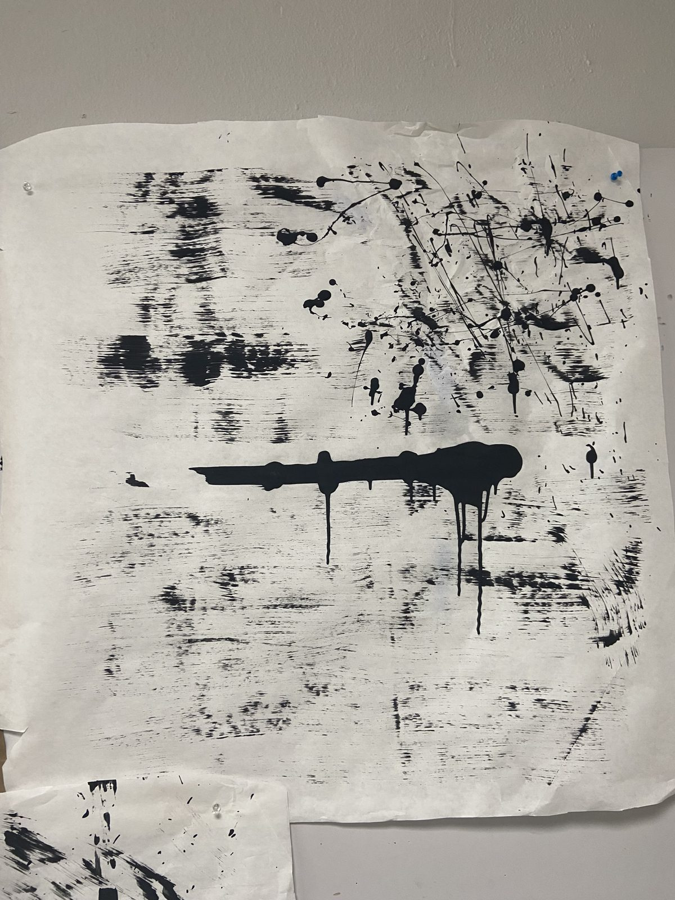
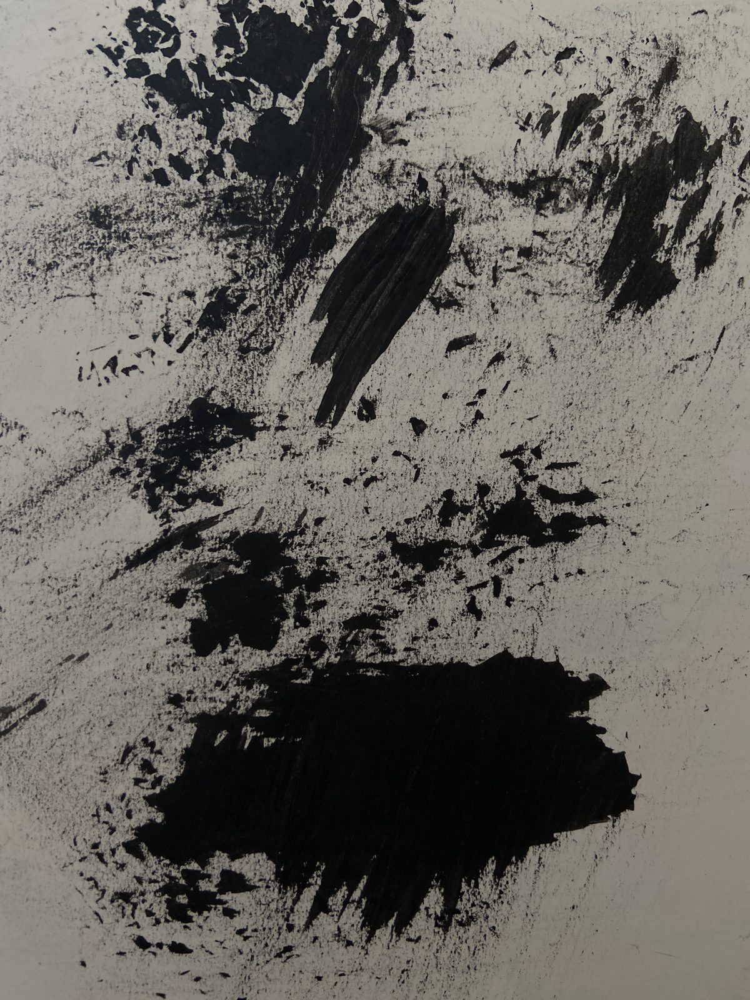

Portafolio · borrador · 2026
Patricia
Díaz
Pintura, tinta y escultura. Negro sobre blanco, con golpes de rosa y rojo.
12 obras · 10 fotografiadas · Puerto Rico
Portafolio · borrador · 2026
Pintura, tinta y escultura. Negro sobre blanco, con golpes de rosa y rojo.
12 obras · 10 fotografiadas · Puerto Rico
Artist statement
[Un párrafo, en primera persona, sobre qué hace Patricia, con qué materiales y por qué. Se escribe a partir de una entrevista con ella.]
Bio corta · ~50 palabras
[pendiente]
Español e inglés
[pendiente]

2026-01

2026-02

2026-03

2026-04

2026-05

2026-06
2026-07

2026-08

2026-09

2026-10
2026-01 · Escultura
[Año]
[Material: ¿madera o cartón pintado?]
[Alto × ancho × profundidad cm]
La única pieza en tres dimensiones del grupo. Entra en la exhibición.
2026-03
[Año]
Aerosol con plantillas sobre lienzo [confirmar]
[Alto × ancho cm]
2026-04
[Año]
Técnica mixta: medias y mallas sobre bastidor [confirmar]
[Alto × ancho × profundidad cm]
2026-07
[Año]
Acrílico y carboncillo sobre papel [confirmar]
[Alto × ancho cm]
2026-06
2026-08
2026-09
2026-10
Identidad visual · propuesta
Tinta · #171515
Papel · #F2EEE8
Magenta · #C8246A
Rojo · #A8141E
Letras: Bricolage Grotesque para títulos, IBM Plex Mono para fichas y datos. Negro y papel mandan; magenta y rojo, solo de acento.
1
Las 12 obras, de frente, bordes visibles, luz pareja.
2
Statement, bio corta y larga, CV. Español e inglés.
3
PDF de 10–15 páginas, menos de 10 MB.
4
Instagram profesional, después web y correo propio.
5
20–30 oportunidades, inauguraciones, una colectiva.
Agenda · propuesta
| Fechas | Qué |
|---|---|
| 2 – 8 nov | Datos de las 12 obras y las 2 fotos que faltan |
| 9 – 22 nov | Sesión de fotos profesionales |
| 23 nov – 6 dic | Statement, bios y CV (es / en) |
| 7 – 13 dic | Portafolio PDF |
| 14 – 20 dic | Instagram y lista de oportunidades |
| Enero 2027 | Primeras aplicaciones y web |